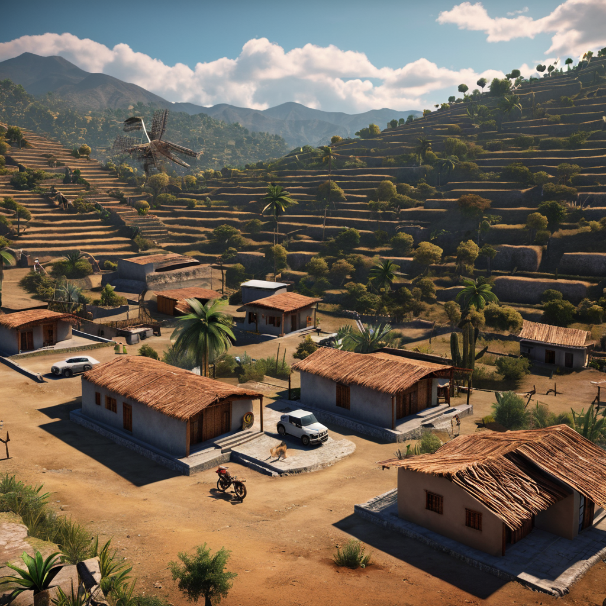
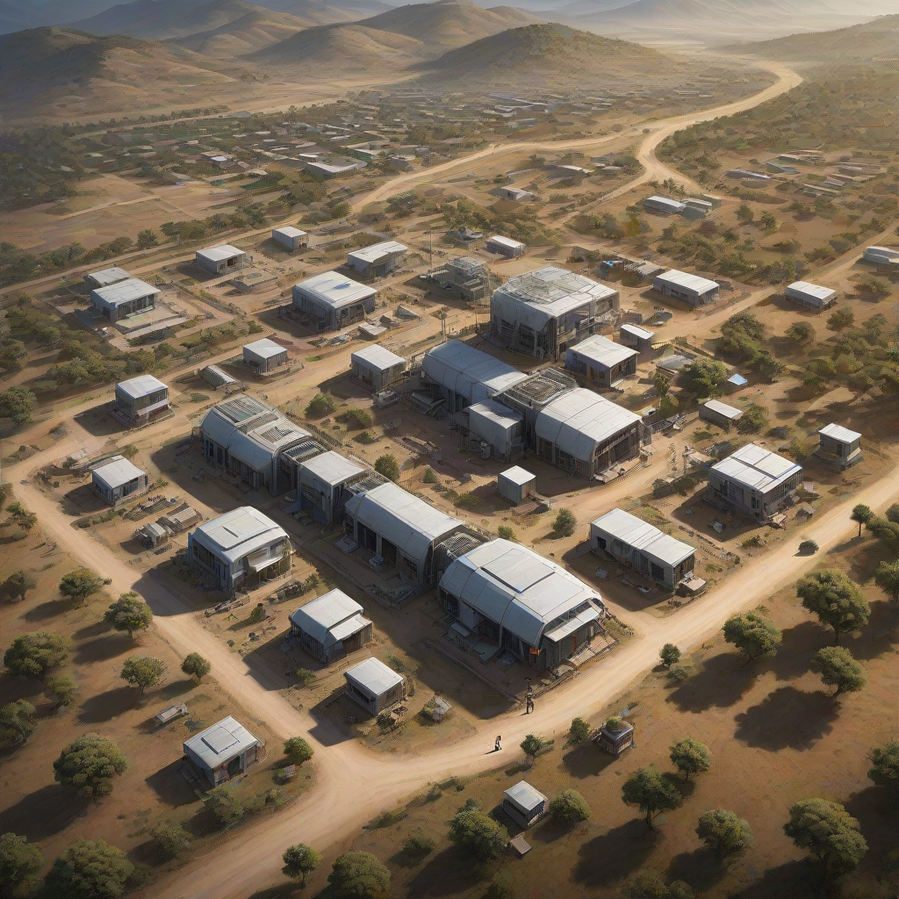

Guía completa: mejor internet rural mexico 2026
El mejor internet rural mexico 2026 ya no es una utopía: gracias a avances en fibra óptica expansiva, satélite de baja órbita y nuevas políticas regulatorias, miles de comunidades en todo el país ahora tienen acceso a conexiones confiables y a precios accesibles. En 2026, empresas como Totalplay, Izzi, Infinitum, Megacable e incluso Dish han extendido sus redes más allá de los centros urbanos, mientras que proveedores especializados en internet satelital para zonas rurales mexico 2026 —como Starlink— ofrecen alternativas viables donde no hay infraestructura terrestre. En esta guía, analizamos en profundidad qué opciones reales existen, sus precios reales en pesos mexicanos, velocidades efectivas, condiciones contractuales y casos de uso específicos para pueblos y comunidades rurales. Te explicamos cuándo conviene más la fibra óptica en pueblos mexico 2026, cuándo el satélite es la única opción viable y cómo evitar contratos engorrosos con internet sin contrato para comunidades rurales. En esta guía aprenderás a elegir el proveedor que realmente funciona en tu localidad, sin sorpresas ni términos ocultos.
- Totalplay Fibra y Izzi Fiber ya llegan a más de 1,200 localidades rurales con velocidades de 100–500 Mbps desde $349 MXN/mes.
- Infinitum (Telmex) ofrece fibra en zonas rurales con planes desde $389 MXN/mes, ideal si ya usas telefonía fija.
- Dish Network y Starlink son los líderes en internet satelital para zonas rurales mexico 2026, sin contrato y con velocidades reales de 50–200 Mbps.
- La fibra óptica en pueblos mexico 2026 supera al cobre y al satélite en latencia y estabilidad, pero su disponibilidad sigue siendo desigual.
Contexto: ¿por qué el mejor internet rural mexico 2026 es diferente al de años anteriores?
Hasta 2023, el internet rural en México se reducía a redes celulares inestables, ADSL de baja velocidad o nada en absoluto. Pero en 2026, varios factores han cambiado el panorama. La FCC y el IFT han impulsado la expansión de redes abiertas en alianza con municipios, lo que ha permitido a proveedores como Totalplay y Megacable firmar convenios para desplegar fibra óptica en pueblos indígenas y zonas marginadas. Además, la llegada masiva de satélites de baja órbita (LEO), especialmente Starlink, ha colocado la conectividad en regiones donde antes ni existía cobertura telefónica. Hoy, un campesino en Oaxaca puede trabajar en línea con Zoom mientras un pequeño negocio en Mexicali usa Internet para facturación digital. La competencia ha bajado precios y elevado estándares:

Análisis detallado: comparativa de proveedores con precios reales (2026)
Fibra óptica en pueblos: ¿realmente llegó a tu comunidad?
Aunque la fibra óptica en pueblos mexico 2026 ya no es exclusiva de ciudades grandes, su despliegue sigue siendo selectivo. Totalplay, Izzi y Infinitum han priorizado municipios con más de 2,000 habitantes y zonas vecinas a sus nodos actuales. En 2026, más de 1,200 localidades rurales tienen acceso a fibra, especialmente en estados como Jalisco, Michoacán, Puebla y Morelos —pero también en regiones de Sonora y Oaxaca donde hay convenios municipales. Los planes incluyen instalación gratuita si firmas 12 o 24 meses, y velocidades de 100, 200 o 500 Mbps, dependiendo de la distancia al nodo.
Por ejemplo, en Tlaxcala y Cholula, Totalplay ofrece 300 Mbps por $599 MXN/mes con instalación sin costo. En algunos pueblos de Oaxaca, Infinitum ya cubre 85% del tejido urbano y vecindarios periféricos con 200 Mbps por $449 MXN/mes. Pero si vives en una comunidad más alejada —digamos, una ranchería en Sierra Norte de Puebla— la fibra aún no llega, y ahí entras al mundo del satélite.
Internet satelital: la alternativa que sí llega a todas partes
Starlink, el servicio de Elon Musk, se ha vuelto el referente del internet satelital para zonas rurales mexico 2026. En 2026, su red cuenta con más de 5,000 satélites V2 Mini, lo que reduce la latencia a 30–50 ms (casi como la fibra) y mejora la consistencia. El plan estándar para México cuesta $699 MXN/mes + $4,599 MXN de equipo (una sola vez), con velocidades reales de 80–180 Mbps. No hay contrato, no hay cupo de datos y el servicio funciona incluso con mal clima. Además, Dish lanzó su propio servicio satelital en 2025, el "DishNet Rural", con planes desde $549 MXN/mes (incluye decodificador gratis), aunque ofrece velocidades más modestas (25–60 Mbps) y una latencia mayor (60–100 ms), ideal para correo, streaming en HD y llamadas.
En contraste, el internet móvil satelital (como Tigo Satelital o Movistar Sat) ya prácticamente desapareció del mercado por su alta latencia y límites estrictos de datos. Por eso, Starlink y Dish son hoy las únicas opciones satelitales viables.
Cobre vs. fibra vs. satélite: tabla comparativa real (2026)
| Tecnología | Precios (MXN/mes) | Velocidad real (descarga) | Latencia | Instalación | ¿Contrato? |
|---|---|---|---|---|---|
| Fibra óptica (Totalplay/Izzi/Infinitum) | $349–$899 | 100–500 Mbps | 5–15 ms | Gratis (si firmas 12–24 meses) | Sí (12–24 meses) |
| Starlink (satélite) | $699 + $4,599 (equipo) | 80–180 Mbps | 30–50 ms | Auto-instalación (15 min) | No |
| DishNet Rural (satélite) | $549–$799 | 25–60 Mbps | 60–100 ms | Profesional (gratuita) | No (solo mensual) |
| ADSL/Cobre (Infinitum clásico) | $299–$499 | 5–25 Mbps | 40–100 ms | Gratis (si tienes línea telefónica) | Sí (24 meses) |
- Fibra: Ideal si vives en un pueblo con cobertura oficial. Mejor relación calidad-precio y rendimiento.
- Starlink: Recomendado para rancherías, zonas montañosas, o si necesitas alta velocidad sin restricciones.
- DishNet: Bueno para uso básico (YouTube, WhatsApp, clases en línea) y personas mayores que priorizan simplicidad.
Si quieres ver si tu colonia o pueblo ya tiene fibra, consulta nuestro análisis actualizado: Mejor internet para casa en 2026: cobertura real por estado.
Cómo elegir tu proveedor: 4 pasos prácticos (con ejemplos reales)
- Verifica cobertura real, no te fíes del mapa oficial
Los mapas de Totalplay y Izzi suelen mostrar "zonas de cobertura" muy amplias. Llama al centro de atención a clientes y pregúntale por tu colonia o número exterior exacto. Por ejemplo, en Oaxaca, muchos pueblos como Teotitlán del Valle sí tienen fibra (Izzi), pero San Bartolo Coyotepec —a solo 10 km— no. Si la instalación falla al 15 días, puedes cancelar sin penalización (resolución IFT-08-2025). - Compara costos totales, no solo la mensualidad
Un plan de $399 MXN/mes de Totalplay puede parecer barato, pero si la instalación cuesta $1,299 MXN y no firmas 24 meses, el costo real es $399 + ($1,299 / 24) = $453.50/mes. En cambio, Starlink cobrará $699/mes pero sin gastos ocultos. Haz un cálculo para 12 meses: si el total es menor con satélite y no hay fibra, elige Starlink sin dudarlo. - Pide una prueba gratuita antes de firmar
Izzi y Infinitum ofrecen pruebas de 7 días en algunas regiones. En Puebla, por ejemplo, puedes solicitar una instalación temporal con equipo de prueba gratis. Usa ese tiempo para hacer llamadas, ver Netflix en 4K, y probar videollamadas. Si el ping supera los 20 ms o hay caídas diarias, busca otra opción. - Considera el internet sin contrato para comunidades rurales
Si vives solo o con familia mayor y no quieres obligaciones legales, DishNet Rural o Starlink son tus aliados. En Mexicali, muchos agricultores de la región del Valle de Mexicali usan Starlink para sensores de riego y cámaras IP, con contratos de " cancelación por escrito con 30 días de aviso", nada más.
Para más detalles sobre cómo verificar cobertura paso a paso, consulta también: Izzi vs Totalplay 2026: ¿cuál gana en tu ciudad?.
Preguntas frecuentes
¿Funciona el mejor internet rural mexico 2026 en zonas con tormentas eléctricas?
La fibra óptica no se ve afectada por rayos ni tormentas, solo por cortes de luz (pero con un UPS de $899 MXN se soluciona). El satélite Starlink tiene un sistema de calefacción integrado para evitar la acumulación de hielo o lluvia, lo que lo hace más confiable que DishNet en climas húmedos. En Oaxaca y Chiapas, donde hay muchos días con lluvia intensa, los usuarios reportan menos caídas con Starlink que con ADSL o Dish.
¿Puedo usar el internet rural para clases en línea o telemedicina?
Sí, y de hecho, en 2026 el IFT exige a los proveedores que garanticen una calidad mínima para educación y salud. Starlink y fibra óptica son ideales: con menos de 50 ms de latencia, Zoom y Microsoft Teams funcionan sin eco ni cortes. En comunidades como San Juan del Río, Querétaro, médicos usan fibra de Infinitum para consultas remotas con el ISSSTE. Si ya tienes fibra, ya estás listo. Si no, prioriza Starlink sobre DishNet para este tipo de usos.
¿Qué pasa si me mudo a otra comunidad rural?
Si te mudas a un pueblo donde el mismo proveedor tiene cobertura (por ejemplo, de Oaxaca a Teotitlán del Valle con Izzi), puedes solicitar la portabilidad de plan sin costo. Si no hay cobertura, no hay portabilidad: tendrás que cancelar (con aviso de 10 días) y contratarse en el nuevo lugar. Starlink y Dish te permiten reubicar la antena sin problemas: solo notificas y cambias la dirección de facturación.
¿El internet satelital para zonas rurales mexico 2026 tiene cupo de datos?
Starlink no tiene cupo de datos en México: puedes descargar, streaming en 4K y gaming sin restricciones. DishNet Rural sí tiene un "uso razonable": si superas 250 GB/mes, pueden reducirte la velocidad temporalmente (no bloquean). En 2026, la mayoría de los usuarios rurales consumen entre 100 y 200 GB/mes (YouTube, WhatsApp, clases), así que Dish suele ser suficiente. Pero si usas Zoom diario o transmites en vivo, Starlink es mejor opción.
Conclusión: ¿cuál es el mejor internet rural mexico 2026 para ti?
El mejor internet rural mexico 2026 depende de tres factores: ubicación, uso y presupuesto. Si vives en un pueblo con cobertura de fibra (y puedes firmar contrato), elige Izzi o Infinitum: cuestan menos y ofrecen la mejor experiencia. Si estás en una ranchería, colina o zona montañosa, Starlink es la única opción seria: más caro hoy, pero con mayor futuro. DishNet Rural es un punto medio económico para uso básico. Y jamás confíes en promesas de ADSL de 20 Mbps: en 2026 esa tecnología es obsoleta.
Recuerda: la fibra es el estándar de oro, pero el satélite ha cerrado la brecha digital. Si quieres saber si tu municipio ya tiene fibra óptica en pueblos mexico 2026, descarga nuestra lista actualizada: Mejor internet para casa en 2026: cobertura real por estado.
No esperes más: conecta tu casa, tu negocio o tu escuela con internet de verdad. Compara planes ahora y elige el mejor internet rural mexico 2026 para tu realidad. Porque en 2026, no hay excusa para estar desconectado.